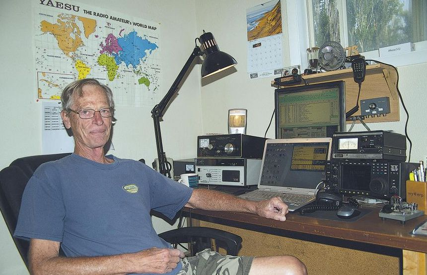

Interview on Community Service
Community
The Washington Times
Ham radio: A hobby or community service or both?
By KARLA POMEROY - Associated Press - Friday, October 2, 2015
BASIN, Wyo. (AP) - When all other communication is down or unavailable, ham radio operators, also known as amateur radio operators, can provide emergency communication. However, the emergency assistance is not the main reason many operators get involved. For Basin’s Jerry Pyle, it’s been nearly a lifelong passion.
He said he doesn’t remember his exact age, but as a young boy between ages 8-10, his father took him to visit his great uncle, a ham radio operator. His great aunt and uncle lived in a trailer and Pyle recalls, “when one entered the door, off to the right was a very large object … seems like it was from ceiling to floor … with knobs and dials. I got a demonstration and I got the bug.
“I told my father, ‘One of these days I am going to have me one of those ham radios!’”
And one of those days turned into his first receiver, a Hallicrafters SX 110. Today he has eight receivers, including one each for his and his wife’s vehicles and their camping trailer. His 40-foot transmitting antenna looms large on his property on the south side of Basin.
In 1979, Pyle passed the novice exam and received his novice license. Today he has the extra class license under the call sign WB7S.
THE NEW AMATEUR RADIO
“People think amateur radio is dying but it’s not. There are new licensees every month, young and old. It’s just such a fascinating hobby. We use computers for a lot of our work,” Pyle said.
Operators log in their contacts, using specific log in software. They log any contact, including same town, other states and other countries.
Just prior to the interview, Pyle had been “working” (attempting to contact) an operator in India.
Log books can be viewed online at each operator’s call sign. Of the more than 300 countries with ham radio operators, Pyle said he has made contacts with at least one operator in 166 countries. With each contact, the operators share contact cards with Pyle showing cards from Finland, Japan, Spain and more. A quick look at his log book also shows contacts in Kuwait, South Africa, Germany, Brazil, Canada and Puerto Rico.
Amateur radio can be likened to its own social media, with many operators enjoying “rag chewing” — contacting another operator and just visiting, about anything. Pyle said they usually avoid politics as a topic, however, because so many have differing opinions.
“I like just sitting and rag chewing,” Pyle said, sitting comfortably in front of his radio setup in a corner room of his home. He also enjoys QSLing (confirm and contact), which results in the logins. He also competes in contests throughout the year. Contests can vary in length and form but often the contests are to see how many contacts a person can get within a certain timeframe. This requires staying up for 24 hours, Pyle said, as breaks are allowed, but most must be for no less than 30 minutes.
As a hobby, Pyle said amateur radio is something that easily can be done year round. He said he enjoys fly fishing and photography, but they are more summertime hobbies.
There’s always something new and interesting coming across the radio waves. During the interview, the International Space Station came through on the radio. Pyle attempted to make contact, but realized they were radioing back to a class, as a member of the ISS could be heard saying he was enjoying it there but missed his wife.
There are three classes of operators — technician, general and amateur extra. According to the American Radio Relay League website, “The technician class license is the entry-level license of choice for most new ham radio operators.
“The general class license grants some operating privileges on all Amateur Radio bands and all operating modes. This license opens the door to world-wide communications.
“The amateur extra class license conveys all available U.S. Amateur Radio operating privileges on all bands and all modes. Earning the license is more difficult; it requires passing a thorough 50 question examination.”
“Amateur radio is an interesting hobby. Once you become an amateur radio operator you join a fraternity where you are concerned about each other,” Pyle said, noting that most operators are known by their call signs rather than name.
COMMUNITY SERVICE
In addition to rag chewing, contacting foreign operators (called Dxing) and contesting, amateur radio operators provide community and emergency services. The Big Horn Basin Amateur Radio Club provides communication for various events in the Big Horn Basin, including the Big Horn 100 horse endurance ride.
Pyle said cell service doesn’t exist in most of the area where the riders go so they have operators at the check points, and Pyle was down in Basin as a network control, along with another operator in Cody.
He said they were able to get assistance when two riders got lost. He said the riders did the right thing and found a safe place to stop until they could be located.
The Big Horn Basin Amateur Radio Club in northwestern Wyoming, in conjunction with several clubs in Montana, this summer also completed a seven-day communications support operation for Cycle Greater Yellowstone, a bicycle tour through part of the wild Greater Yellowstone Ecosystem of Wyoming and Montana.
Ernie Smith, N7AHQ in Greybull, and Rand “Paladin” Flory, KX7PC in Cody, from the BHBARC accompanied the bicyclists for the entire weeklong trip. Tom Stephens, KF5NUU at Elk Fork Campground, provided day support. Pyle, WB7S, acted as net control for much of the Wyoming portion of the cycling adventure. Montana’s Ron Glass, WN7Y in Billings, headed up the amateur radio operator portion of the campaign, which included the services of about 26 hams at one time or another.
Amateur radio operators have assisted in a number of emergencies and natural disasters, including Hurricane Katrina and most recently the Nepal earthquake. Pyle said through amateur radio and through his contacts through amateur radio he was able to assist some friends in Montana in getting in touch with a Nepal family that they had known.
THE SPECIFICS
Amateur radio works off of batteries or generators when needed in remote areas. They use a different bandwidth than radio stations, emergency responders and citizen band radio operators. According to the ARRL, amateurs are allocated 26 bands, or groups of frequencies, spaced from 1.8 megahertz, which is just above the broadcast radio frequencies, all the way up to 275 gigahertz.
They use their own towers or repeaters that have been installed in different regions. Pyle said there is a repeater near the Medicine Wheel on the Big Horn Mountains and a Meadowlark repeater that Washakie County Emergency Management and Homeland Security Director Kimball Croft helped get constructed. Worland ham operator Mike Siegfried maintains the repeater, he said.
For Pyle, he also has his own 40-foot antenna connected to his amateur radio system.
According to the ARRL, “There is a great variety of ways that amateur radio operators are able to communicate. Using voice is just one. Morse code is still widely used. Packet, radio teletype (often called Ritty), and PSK are three more ways to communicate. Even faster transmissions are being developed using methods which can send almost any form of digital data. Hams also use television to send pictures over the air.”
Pyle said his favorites are voice and radio teletype. Recently, during the 100th anniversary of the ARRL, every state had the opportunity to work as a W1AW portable (Wyoming was W1AW portable 7) and he was designated as the radio teletype operator for that operation in Wyoming. He said there was a huge “pileup” on the radio as people clamored to try and contact Wyoming. Due to the population, he said Wyoming doesn’t have many operators and thus it’s a rarity to make contact for Wyoming.
LOCAL CLUB
Pyle serves as president of the Big Horn Basin Amateur Radio Club and is also a volunteer license examiner. The club has about 60 operators as members from around the Big Horn Basin and a couple in Illinois who visit the area in the summer and want to be involved in club activities.
Pyle and his wife, Susan, have lived in Basin since 1968, moving for about a year and a half to Cheyenne between 1968 and now. They have two sons, both living in Cheyenne, and a daughter in Pennsylvania. He said only one of his children has shown any interest in amateur radio, with Charlie getting his novice license and working toward a technician license. Pyle is retired from the Wyoming Department of Transportation.
Susan has obtained her technician license and was able to get a personal call sign - WB7SUE.
Of his hobby, Pyle said, “I really like it. Through ham radio I’ve acquired very nice friends.” He said he has gotten together with operators for fishing trips at Upper Sunshine. “We bring our Dutch ovens and naturally we throw up an antenna,” he said.